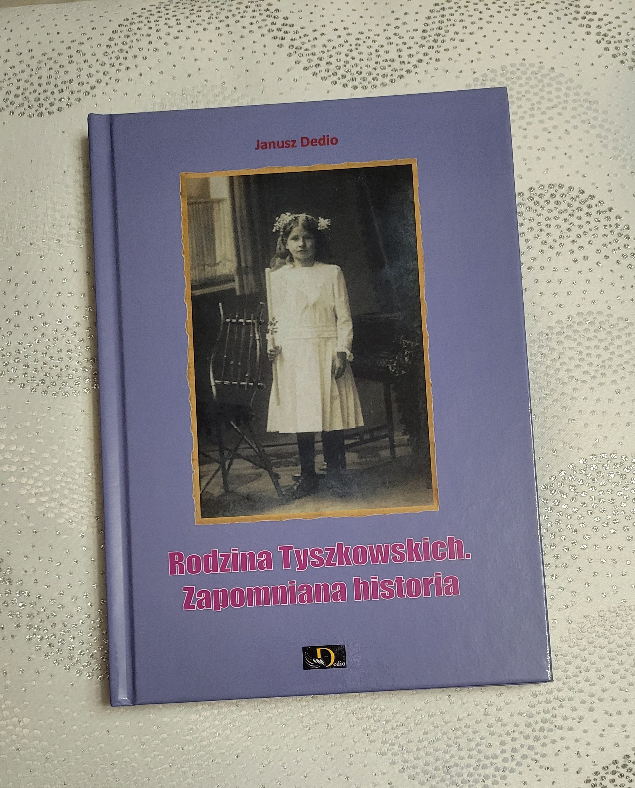
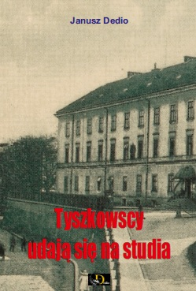
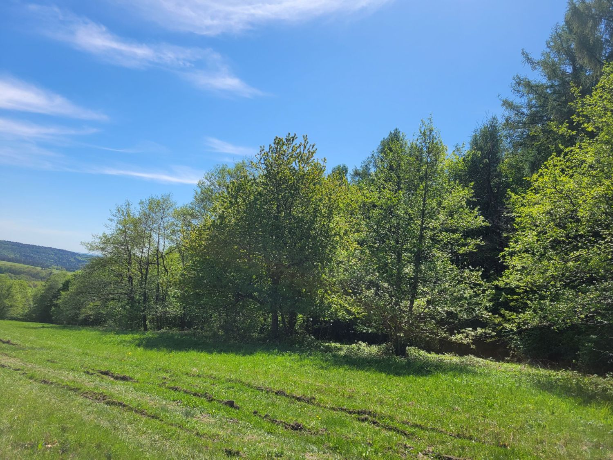
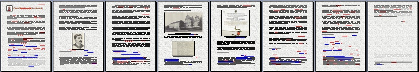

Co jakiś czas w mediach pojawiają się artykuły na temat naszej miejscowości, co nas bardzo cieszy. Mamy jednak pewną uwagę do autorów, by nie powielali błędnych informacji o historii tej miejscowości, na co jesteśmy, ze zrozumiałych względów, bardzo wyczuleni.
Pierwsza wzmianka o wsi Kopysno pochodzi z początków XV wieku, co zostało udokumentowane w akcie nadania wsi dostępnym na naszej stronie, w zakładce „Informacje/Dzieje wsi”.
Wieś w tym czasie zamieszkiwali Wołosi, grupa etniczna o pochodzeniu romańskim, wywodzącym się z Półwyspu Bałkańskiego.
Jak się przypuszcza, w wyniku migracji, już w XIII wieku dotarli na tereny Polski południowej i je zasiedlili. Główna fala migracji Wołochów nastąpiła w latach 70. XIV wieku, stąd też wiele wsi na tym terenie funkcjonowało wówczas na prawie wołoskim, o czym można się przekonać zapoznając się z literaturą z tego zakresu, do której odsyłamy zainteresowanych.
O tym, że wieś Kopysno zamieszkiwali Wołosi, świadczy wspomniany akt nadania wsi, w którym wymieniono takie nazwy jak „Mochowisko Duże” i „Mochowisko Małe”, nawiązujące do działalności pasterskiej tej grupy etnicznej. Do dziś zresztą znane są nazwy kilku obszarów wsi, takich jak „Horbisko Kosarzyska”, „Mochowisko Doliny”.
Pod względem religijnym Wołosi byli wyznania prawosławnego, lecz w wyniku tzw. Unii brzeskiej, zawartej w 1596 r., kiedy Cerkiew prawosławna na terenie Rzeczypospolitej Obojga Narodów przyjęła dogmaty katolickie i przeszła pod jurysdykcję papieża, sytuacja ta uległa zmianie. Nie odbyło się to jednak bez problemów z powodu protestów biskupów, w tym biskupa przemyskiego Michała Kopystyńskiego (Kopysteński), potomka rodu Kopystyńskich z Kopysna, który wstępnie przyjął warunki unijne, lecz potem od nich odstąpił.
Warte podkreślenia jest fakt, iż Sejm Rzeczypospolitej Obojga Narodów zwołany 10 lutego 1597 r. zadecydował, że Michał Kopystyński (Kopysteński) pomimo sprzeciwu wobec ustaleń Unii, zachowa prawo do posługiwania się tytułem biskupa. Widocznie ze względu na zasługi dla kościoła, pozwolono mu pozostać na stanowisku i funkcjonować według zasad kościoła prawosławnego do jego śmierci.
Można przypuszczać, iż dopiero z chwilą jego śmierci, a przyjmuje się, że zmarł w 1610 r., parafie, którymi zarządzał do tego czasu działały w obrządku prawosławnym.
Inną kwestią wartą wyjaśnienia jest nazewnictwo stosowane w stosunku do kościoła powstałego w wyniku ustaleń Unii brzeskiej. Na początku był to „Kościół unicki”, potem nazwa ta ewoluowała i używano m.in. pojęcie „Kościół wschodni”.
Nazwa „Kościół greckokatolicki” została wprowadzona dopiero w 1774 r. przez austriacką cesarzową Marię Teresę (Maria Teresa Walburga Amalia Christina von Habsburg) i od tej pory uzasadnione jest posługiwanie się nią.
Na przestrzeni wieków zmieniały się granice i państwowość, a także ulegała zmianom struktura etniczna mieszkańców, lecz nie można wyrugować z historii wsi powyższych faktów.
Choć poruszone kwestie nie mają znaczenia w oczekiwaniu na lepszy świat, warto jednak już dziś kierować się prawdą, gdyż stanowi ona jego fundament.
Otrzymaliśmy dziś z drukarni zapowiadaną publikację na temat rodziny Tyszkowskich pt. "Rodzina Tyszkowskich. Zapomniana historia"(ISBN 978-83-973242-3-7).
Do końca roku mamy nadzieję wydać dwie kolejne pozycje, o których napiszemy w późniejszym terminie.

Idąc śladem historii rodziny Tyszkowskich, którzy władali m.in. dobrami w miejscowości Kopysno, w przygotowaniu mamy publikację
obejmujacą nieznane fakty z życia rodziny Tyszkowskich, w tym zięcia Józefa Tyszkowskiego i jego wnuczki Michaliny Jankowskiej.
Publikacja jest obecnie na etapie przygotowania do wydruku.
Miło nam poinformować, iż ukazała się już kolejna nasza publikacja, tym razem obejmująca bardzo ważny etap życia Antoniego, Józefa i Pawła Tyszkowskich, związanego z ich wykształceniem.
Bracia Antoni i Józef wyższe wykształcenie zdobywali w stolicy cesarstwa, w Wiedniu, natomiast Paweł studiował we Lwowie.
Publikacja zawiera nieznane fakty z tego okresu i koryguje błędne informacje, jakie można znaleźć w przestrzeni publicznej.
Publikacja została wydana z własnych środków autora i nie jest przeznaczona na sprzedaż.

Zgodnie z poprzednią wiadomością, w połowie sierpnia ukazać się ma publikacja pt. "Tyszkowscy udają się na studia" w wersji tradycyjnej, książkowej.
Nie będzie ona dostępna w wersji elektronicznej. Chętnie udostępnimy ją osobom, które wykażą
rzeczywiste zainteresowanie tematem :).

Stowarzyszenie Miłośników Wsi Kopysno pod nadzorem archeologa kontynuuje prace remontowe Cerkwi w Kopysnie mające na celu wzmocnienie fundamentów zabytkowej budowli.
Więcej na ten temat dowiecie się na stronie Stowarzyszenia facebook.com.
Serdecznie pozdrawiamy biorących udział w tym dziele i zachęcamy wszystkich do śledzenia postępu prac remontowych na stronie Stowarzyszenia.
***
Niektórzy pytają nas o lokalizację cmentarza cholerycznego w Kopysnie.
Epidemia cholery miała miejsce podczas Wielkiej wojny, zwanej później pierwszą wojną światową i objęła wiele miejscowości Galicji.
Z obawy o rozprzestrzenienie się choroby, zmarłych na cholerę chowano w miejscach oddalonych od siedzib ludzkich.
Tak też się stało w przypadku mieszkańców Kopysna, których pochowano u stóp Kopystanki, przy lesie Grabnik.
Nie zachowały się żadne dokumenty w tej sprawie, a i sam cmentarz nie jest wyraźnie oznakowany. Dzięki
mieszkańcom Kopysna udało się nam go zlokalizować po drewnianym krzyżu, który dotrwał do dziś i stoi oparty o drzewo. Niestety nie znamy datę jego ustawienia.
Dla zainteresowanych podajemy współrzędne geograficzne cmentarza cholerycznego - 49°40'55.15" N 22°37'46.32" E oraz załączamy fotografię tego miejsca wykonaną w maju 2025 r.

***
Zainteresowanych historią rodziny Tyszkowskich informujemy, że zaktualizowaliśmy materiał dotyczący wykształcenia Pawła Tyszkowskiego oraz opracowaliśmy artykuł na temat jego adopcji przez Antoniego Tyszkowskiego.
Zgodnie z zapowiedzią materiały te nie będą publikowane na naszej stronie. Zamierzamy je wydać w wersji tradycyjnej, książkowej.
W opracowaniu znajdują się inne zagadnienia dotyczące rodziny Tyszkowskich, o czym będzimy informować na bieżąco.
Zgodnie z zapowiedzią, zamieściliśmy na naszej stronie informacje na temat tajemniczego kopca w Kopysnie. Można się z nimi zapoznać tutaj - Kopiec.
Tajemniczy kopiec odnaleziony
Tak, udało się nam odnaleźć tajemniczy kopiec, o którym pisaliśmy wcześniej. Więcej o nim wkrótce.
Korzystając z okazji zamieszczamy krótki film ukazujący emocje jakie towarzyszyły realizacji planu poszukiwań. Wystąpił w nim zabłąkany turysta z Przemyśla, podobno jakiś inspektor, stąd też należy mieć ograniczone zaufanie do treści jego wypowiedzi :)
Nie było to łatwe, ale przy odrobinie trudu mogliśmy zobaczyć kopiec, który spędzał nam sen z powiek od wielu miesięcy. Sprzyjała nam piękna pogoda, którą zamówiliśmy wcześniej w pewnym instytucie i wspaniała atmosfera stworzona przez osoby z którymi moglibyśmy pójść na koniec świata… a na pewno pozostać na Kopysnie, nawet w namiotach jak za czasów Abrahama i czekać na wytęskniony świat, w którym królować będą wartości takie jak prawda i miłość.
Niesamowite uczucie, móc dotknąć dzieło rąk ludzkich prawdopodobnie z czasów rozgraniczenia wsi Kopysno, co miało miejsce w XV wieku.
Szczególne podziękowania winny trafić do naszego serdecznego kuzyna Wieśka, na którego włościach mogliśmy zjeść pieczoną kiełbasę z czosnkiem niedźwiedzim posmarowaną musztardą horcicą i skosztować upieczonych na tę okazję ciast…
W tym dniu dominował temat kotów, ziół i wielu innych fascynujących opowieści, w tym o beztroskim kocie odpoczywającym w kuchence mikrofalowej.
Mamy nadzieję, że każdy rozwinie myśli podczas następnego spotkania, które z niecierpliwością oczekujemy.
2 maja 2025 r.
Spotkanie w Kopysnie
Z przyjemnością informujemy, iż planowane spotkanie w Kopysnie jest aktualne (zob. wiadomość z 20 marca 2025 r.). Prognozy pogody są zadowalające, więc
mamy nadzieję, że wszystko odbędzie się bez zakłóceń.
Serdeczenie pozdrawiamy i z niecierpliwością czekamy na wspólną przygodę :)
Mieszkańcy Kopysna w XIX w. ankiecie dot. żywienia
W 1877 r. przeprowadzono badania ankietowe wśród ludności Galicji dotyczące spraw żywienia. Wyniki tych badań opublikowano w książce „Próba badań nad żywieniem ludu wiejskiego Galicji” Napoleon Cybulski, Kraków 1894, Towarzystwo Opieki Zdrowia.
(digital.onb.ac.at skan 95).
Badania objęły również mieszkańców Kopysna i dotyczyły m.in. spożycia mięsa i wódki. Na tle innych miejscowości, Kopysno jawi się jako uboga wieś, gdzie na jednego mieszkańca roczne i średnie spożycie mięsa wyniosło 1,5 kg (najzamożniejsi) a spożycie wódki 3 litry przez wszystkich bez względu na stan zamożności. Dla porównania, na jednego mieszkańca Przemyśla spożycie mięsa wyniosło 12 kg mięsa (najzamożniejsi) i 15 litrów wódki (najzamożniejsi).
Oceniając daną sytuację przez pryzmat współczesnej wiedzy, mieszkańcy Kopysna jawią się jako mądrzy ludzie dbający o swoje zdrowie. Niestety, przyczyną tak niskich wskaźników był raczej ich stan ekonomiczny, a nie świadomość szkodliwości nadmiernego spożywania mięsa i alkoholu.
Polecamy wspomnianą publikację, która zawiera także alfabetyczny spis potraw ze sposobem ich przyrządzania. Fitka, bigos z… kiszonych buraków, dziadki, czer, hołojuszka itp. Czasem warto wrócić do dawnych czasów.
Informacja
Informujemy, że nie są już dostępne opracowania dot. m.in. rodziny Tyszkowskich, które zamieszczaliśmy na naszej stronie. Mamy nadzieję, że ukażą się one w publikacji, którą mamy zamiar wydać w wersji tradycyjnej.
Remont Cerkwi w Kopysnie
Stowarzyszenie Miłośników Wsi Kopysno przed kilku laty podjęło cenną inicjatywę mającą na celu przeprowadzenie remontu niszczejącej
Cerkwi w Kopysnie, o czym pisaliśmy na naszej stronie.
Więcej o tym na stronie Stowarzyszenia.
Niestety z pewnych niezrozumiałych przyczyn, pomimo wszelkich uzgodnień z właściwymi organami, zapewnieniu otrzymania dotacji na inwestycję,
nagle Stowarzyszenie zostało pozostawione same, bez wsparcia finansowego.
Nie patrząc na przeciwności, członkowie Stowarzyszenia podjęli się przeprowadzenia remontu cerkwi na własny koszt. Wykonano już część prac,
o czym można się przekonać na filmach zamieszczonych na ww. stronie Stowarzyszenia, lecz czekają następne prace, których wykonanie przekracza
możliwości finansowe Stowarzyszenia.
Pragniemy więc poinformować, iż w ramach partnerstwa z Fundacją Studencką „Młodzi-Młodym” (ul. Bór 116, 42-202 Częstochowa, NIP: 9492044231, KRS: 0000270261)
istnieje możliwość wsparcia tej jakże istotnej inicjatywy, mającej na celu ochronę lokalnego dziedzictwa kulturowego poprzez dobrowolne wpłaty
określone na stronie Fundacji "Młodzi-Młodym".
Zgodnie z obietnicą zaplanowaliśmy w tym roku wycieczkę do Kopysna celem odszukania tajemniczego kopca ziemnego, który naszym zdaniem odegrał ważną rolę w historii naszej miejscowości a jego lokalizacja jest znana nielicznym.
2 maja 2025 r., godz. 10.00
Plan wycieczki obejmuje wizytę na Horbysku i wejście na Kopystankę, z której udamy się w poszukiwaniu kopca. Choć wiemy gdzie on się znajduje, nigdy nie widzieliśmy go na własne oczy.
Jeżeli Ty także chciał(a)byś go zobaczyć, czekamy na Twoje zgłoszenie.
Wycieczka uzależniona jest od pogody. W przypadku obfitych opadów deszczu i związanych z tym utrudnień, impreza nie odbędzie się.
Udział w imprezie jest bezpłatny, prowiant we własnym zakresie. Przewidujemy po zakończeniu imprezy wspólne ognisko.
Zainteresowani bedą mogli zapoznać się publikacją "Oszust z Kopysna na dworze cesarza Franciszka Józefa I" oraz "Kopysno w opowieści", którą mamy nadzieję wydać do końca kwietnia br.
(Zob. okładki publikacji).
Impreza ma charakter zamknięty. Zastrzegamy sobie prawo do odwołania imprezy bez uzasadnienia.
Jeżeli ktoś ma pytania, uwagi i propozycje odnośnie imprezy, prosimy o kontakt.
Organizatorzy
Znaleźliśmy w sieci kilka ciekawych krótkich filmów, które polecamy:
- "Kopystanka 2022", nawiązujący do jednego wydarzeń I wojny światowej, do wypadu wojsk austriackich
na Kopystankę, co miało miejsce w grudniu 1914 r. (więcej kopysno.pl),
- "Kopyśno, st. 1 (Poland)" przedstawiający grodzisko i okolice Kopysna w wersji 3D.
W ostatnich latach nastąpił prawdziwy rozkwit archiwów dostępnych w sieci, stąd też często zmuszeni jesteśmy aktualizować
informacje zgromadzone na naszej stronie. Z tego powodu nie zawsze jest o tym wzmianka w Aktualnościach.
Dziś uzupełniliśmy listę osób, mieszkańców Kopysna (w tym byłych, jak rodzina Intrator, żydowskiego pochodzenia), które brały udział
w kampanii wrześniowej, zaginęły lub zostały pomordowane w obozach koncentracyjnych itp. Pełny wykaz dostępny tylko dla osób zalogowanych.
Jednocześnie informujemy, iż nie uzurpujemy sobie prawa do odkrywania i dokumentowania historii Kopysna. Chętnie natomiast współpracujemy z każdym,
kto pragnie dołożyć własną cegiełkę do tego, co już zostało stworzone przez ponad 20 lat naszej działalności.
***
Przygotowaliśmy opracowanie dotyczące wykształcenia Pawła Tyszkowskiego, ostatniego z rodu Tyszkowskich.
Z uwagi na plany wydania drukiem wszystkich opracowań dotyczących rodziny Tyszkowskich, opracowanie to nie będzie ogólnodostępne.

mgr farmacji Paweł Tyszkowski
W opracowaniu mamy kolejny materiał pt. "Tyszkowscy na studiach w Wiedniu" zawierający m.in. skany dokumentów nigdzie dotąd nie publikowanych. Taniec, podkuwanie koni, chemia ogólna... tego uczyli się Antoni i Józef Tyszkowscy... a gdzie Antoni poznał m.in. budowniczego Twierdzy Przemyśl, gen. Daniela Salis Soglio? O tym i o wielu innych ciekawych zdarzeniach z życia Tyszkowskich w Wiedniu, dowiemy się wkrótce.
Przez ostatnie dni strona Kopysna z powodu prac nad jej aktualizacją była niedostępna, za co przepraszamy.
***
Uprzejmie informujemy, że przypadku wykorzystania fragmentów opracowanych przez nas materiałów zamieszczonych na naszej stronie, zarówno w ramach tzw. prawa cytatu, jak i przy ich publikacji za naszą zgodą, należy podać ich źródło.
{kind=link}